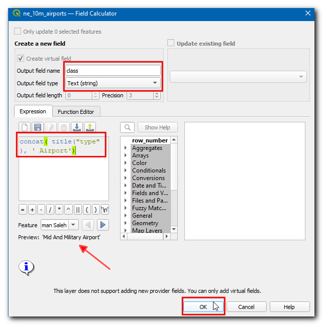
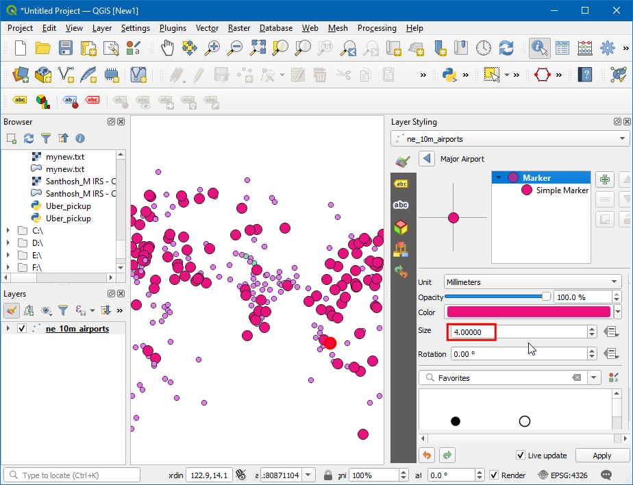
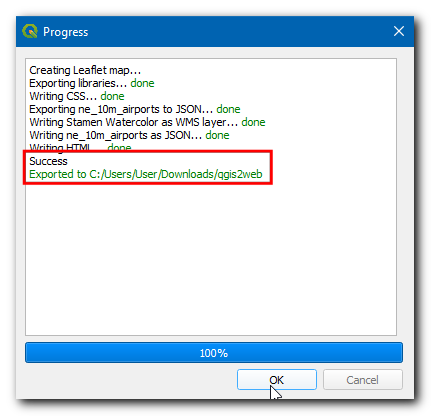
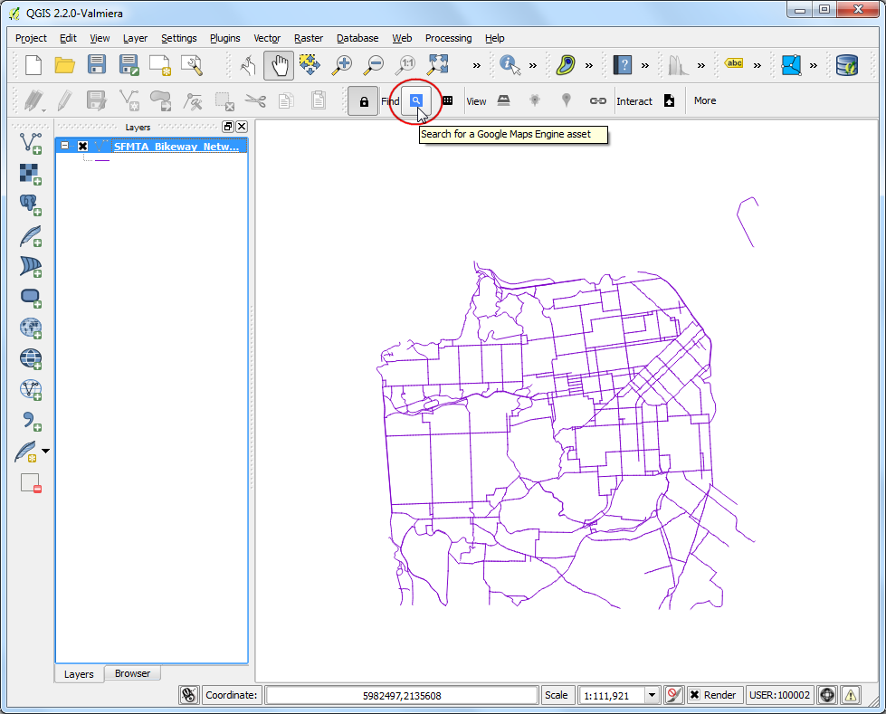

Ujaval Gandhi
Ujaval GandhiIn kaart brengen op het web met QGIS2Web (QGIS3)¶
Het in kaart brengen op het web is een fantastisch medium om uw gegevens van GIS te publiceren op het web en ze toegankelijk te maken voor andere gebruikers. Het maken van een kaart voor het web is een geheel ander proces dan er een maken in een GIS. Gebruikers van GIS zijn over het algemeen geen programmeurs voor het web en het is een uitdaging als men een kaart voor het web wil maken die voldoet aan dezelfde kwaliteit als voor het maken van een kaart in een GIS. Gelukkig zijn er gereedschappen aanwezig om uw werk vanuit QGIS te vertalen naar kaarten voor het web. In deze handleiding zult u leren de plug-in QGIS2Web te gebruiken om een kaart voor het web te maken met behulp van bibliotheken van OpenLayers of Leaflet vanuit uw project van QGIS.
Overzicht van de taak¶
We zullen een Leaflet webkaart van de vliegvelden in de wereld maken.
Andere vaardigheden die u zult leren¶
Hoe de widgets Bewerken in QGIS te gebruiken om bepaalde velden te verbergen en aangepaste typen in te stellen.
Hoe een virtueel veld te maken met behulp van Veldberekeningen.
De gegevens ophalen¶
We zullen de gegevensset `Airports `_ van Natural Earth gebruiken.
Download het `shapefile Airports `_.
Voor het gemak kunt u direct een kopie van de gegevensset downloaden vanaf de link hieronder:
Gegevensbron [NATURALEARTH]
Procedure¶
Open QGIS. Navigeer met het paneel Browser naar de map die het gedownloade bestand bevat. Vergroot het bestand
ne_10m_airports.zipen sleepne_10m_airports.shpnaar het kaartvenster.

Nu zal een nieuwe laag worden geladen in het kaartvenster. We zullen nu een kaart maken in QGIS die er uitziet en zich gedraagt net zoals we zouden willen voor een kaart voor het web. De plug-in
qgis2webzal de instellingen van QGIS overnemen en automatisch de kaart voor het web maken zonder dat wij iets merken van de bibliotheken voor het maken van kaarten voor het web. Als een gebruiker op een markering voor een vliegveld klikt, willen we een informatie-venster weergeven dat nuttige informatie over het vliegveld weergeeft. Deze informatie is al aanwezig in de attributentabel van de lagenne_10m_airports. Klik met rechts op de laagne_10m_airportsen selecteer Eigenschappen.

Schakel, in het dialoogvenster Laag-eigenschappen, naar de tab Formulier attributen. U zult alle namen van velden in de laag zien.

Niet alle velden zijn relevant voor de gebruiker, dus velden behalve name, iata_code, type en Wikipedia zijn uitgeschakeld door te klikken op het veld en het Type widget ` te wijzigen naar ``Verborgen`.

In het veld Wikipedia selecteer
MultilijnenHTML, zodat de in dit veld aanwezige link zal worden gerenderd als een hyperlink voor de gebruiker. Klik, na het instellen van het respectievelijke type widget voor elk veld, op OK.

Klik op de knop Objecten identificeren op de werkbalk.

Klik op een punt, dit zal de details ophalen van het vliegveld op die locatie, alleen de velden type, name, iata_code en wikipedia worden weergegeven, omdat de andere velden zijn verborgen. Ook is het veld wikipedia geaccentueerd als hyperlink.

De waarden in het veld type kunnen wat informatiever worden. Laten we een nieuw veld maken, genaamd class, en het woord airport toevoegen aan elk item in het veld type. D.i. een item als major zal worden Major airport.

Voer het Naam voor veld in als
class, kiesTekst (string)in Veldtype. Het veldtypein de laag bevat waarden zoalssmall,mid,largeetc. We kunnen een expressie toevoegen om het hoofdlettergebruik te wijzigen tot eerste letter hoofdletter en het woord Airport toevoegen voor betere leesbaarheid. Voer de volgende expressie in het vak Expressie in en klik op OK.
concat( title("type"), ' Airport')
Notitie
U kunt ook de operator voor samenvoegen || gebruiken om tekenreeksen samen te voegen. De expressie mag ook worden herschreven als (title("type") || ' airport')
Nu hebben we een veel beter uitziend veld voor het type airport en hebben we het veld type niet langer nodig. Klik met rechts op de laag en selecteer Eigenschappen, schakel naar Formulier attributen en schakel het veld type uit door het Type widget om te schakelen naar
Verborgen. Klik op OK.

Gebruik nu het gereedschap Objecten identificeren en selecteer een vliegveld, u zult een nieuw veld class zien met de categorie van het vliegveld netjes opgemaakt, en het veld type is verwijderd.

Laten we nu de laag opmaken, klik op het pictogram Paneel Laag opmaken openen en wijzige het Type naar
Categorieën, selecteerclassin Waarde en klik op Classificeren.

U zult zien dat verschillend gekleurde cirkels worden toegewezen aan verschillende typen vliegvelden. Voor deze handleiding zullen we de kaart beperken tot burgervliegvelden. Houd de Ctrl-toets ingedrukt en selecteer alle categorieën voor militaire vliegvelden. Als alles is geselecteerd, klik op Verwijderen.

Apart van het toewijzen van een verschillende kleur aan de categorie, kunnen we de grootte van het symbool vergroten om onze gebruikers visueel te helpen de verschillende type vliegvelden te onderscheiden. Dubbelklik op het symboolpictogram in
Major Airportom de grootte te wijzigen.

Stel de Grootte in op
4, volg dan dezelfde stappen om de grootte vanMid Airportin te stellen als3enSmall Airportals2.

Laten we een basislaag toevoegen voor geoverwijzing,
Stamen Watercolorzou een goede achtergrondkaart zijn voor dit project. Selecteer, om de laag toe te voegen, . Bekijk de handlleiding Plug-ins gebruiken (QGIS3) om meer te weten te komen over deze plug-in.

Onze kaart is nu klaar. Dit is een goed moment om uw werk op te slaan. Klik op het pictogram Project opslaan op de werkbalk en voer
Airportsin als de naam van het project.

Nu zijn we gereed om ons project als een webkaart te exporteren. Installeer de plug-in qgis2web door te gaan naar (Zie Plug-ins gebruiken (QGIS3) voor meer details over het installeren van plug-ins in QGIS). Ga, als de plug-in is geïnstalleerd, naar .

Nu zal een dialoogvenster Export to web map verschijnen. Dit is de primaire plaats om de weblay-out van uw webkaart aan te passen. Het paneel aan de linkerkant bevat alle opties voor configuratie. U kunt elke instelling wijzigen en voorbeelden van de bewerkingen zien aan de rechterkant, door te klikken op de knop Update preview. De plug-in kan de kaart exporteren met veel verschillende bibliotheken voor webkaarten. Voor deze handleiding zullen we de bibliotheek Leaflet `_ gebruiken. Zorg er dus voor dat u de optie :guilabel:`Leaflet aan de onderzijde hebt geselecteerd.

Laten we nu de Popup fields van de laag ne_10m_airport wijzigen. Wijzig alle velden naar
inline label, dit zal een betere weergave geven bij het inspecteren van het object op de kaart.

Schakel nu naar de tab Appearance. Selecteer de volgende vakken - Add address search, Geolocate user, Highlight on hover. In Add layer list: kies
Collapsed. Kies voor Layer search het veldne_10m_airport: iata_code. Deze optie voegt een zoekvak toe waar de gebruiker naar een vliegveld kan zoeken op de code ervan. Klik, als alle wijzigingen zijn gemaakt, op Update preview.

Laten we nu de objecten eens controleren die zijn toegevoegd aan de kaart. Klik op het pictogram Find (verrekijker) en typ
DXBen druk op enter, dit zal de kaart centreren op Dubai international airport.

Klik op het pictogram van het vliegveld om de informatie over het vliegveld te bekijken.

Klik op het pictogram Search (vergrootglas), en zoek naar
new yorken druk op enter.

Nu zal de kaart worden gecentreerd op New York City. U kunt voor elke plaats/locatie proberen de locatie te verkrijgen. Deze locatie wordt bepaald met het geocoderen van het adres. We zullen ook een meting toevoegen om de lineaire afstand tussen opgegeven punten op de webkaart te verkrijgen. Kies, in Measure tool,
Metric. Klik op Update preview.

Laten we nu de lineaire afstand in SI-eenheden meten tussen de vliegvelden EWR en JFK. Klik op het pictogram Measure (liniaal) en selecteer Create a new measurement. Klik dan op de vliegvelden en als het punt is gekozen zullen de latitude en longitude van het punt worden vastgelegd en gebruikt om de afstand te berekenen. Nu wordt de afstand weergegeven in meters.

Schakel naar de tab Export en selecteer het vak Minify GeoJSON files. Dit verkleint de grootte van het uiteindelijke bestand. Klik op … naast Exporter.

Kies de gewenste locatie (map) voor het exporteren en klik op Map selecteren, klik dan op de knop Export.

Nu worden alle eigenschappen, opmaak, en aangepaste opties geëxporteerd naar een map waarin alles is opgenomen. Nadat dat met succes is voltooid zal een link verschijnen in het pop-up dialoogvenster Progress, klik op de link om de locatie van het bestand te openen.

Deze map zal alle vereiste bestanden bevatten om een webkaart te maken. Klik op het bestand
index.htmlom de webkaart te bekijken.

Notitie
De plug-in qgis2web heeft veel beperkingen en kan niet alles wat de krachtige bibliotheken voor webkaarten OpenLayers en Leaflet kunnen. Dit proces kan dienen als het startpunt in het proces voor het maken van uw webkaarten en u kostbare tijd besparen bij het maken van een basissjabloon van waaruit u de webkaart verder kunt aanpassen. U kunt deze ebstanden bewerken in een code-bewerker om het aanpassen naar uw wensen.
De webkaart zal worden gerenderd in uw standaard webbrowser. Laten we nu eens de laatste optie testen die is toegevoegd aan de kaart, (d.i.) Geolocate user. Klik op het pictogram Marker.

Browser zal vragen naar toestemming voor Toegang tot uw locatie, klik op
Toestaan. De kaart zal nu centreren op uw huidige locatie.

De geëxporteerde kaart bevindt zich op uw computer. Hoewel u het in actie kunt zien, is het niet erg nuttig omdat u het met niemand kunt delen. U dient hem te uploaden naar een webserver om anderen in de gelegenheid te stellen hem te bekijken. Hoewel het proces voor uploaden zal variëren, afhankelijk van het type server waar u toegang toe heeft - een goedkope en gemakkelijke manier om uw kaart te publiceren op het web zou zijn om een van de publieke services voor opslaan in de cloud te gebruiken. Amazon S3 is een populaire service, die kan worden gebruikt voor het serveren van statische webpagina’s zoals onze kaart. U dient een account aan te maken. Bezoek, als het account is aangemaakt, AWS Console en volg de instructies om een mandje te maken.

Notitie
Hoewel AWS een genereuze Free-Tier bevat, zouden kosten in rekening kunnen worden gebracht voor het gebruik van deze service als u de limieten voor het gratis gebruik overschrijdt.
Als eenmaal een mandje is aangemaakt, kunt u de inhoud van uw geëxporteerde map naar het mandje uploaden.

Als u wilt dat de kaart voor iedereen te zien is, zorg er dan voor dat Grant public-read access is geselecteerd tijdens het uploaden.

Als de gegevens eenmaal zijn geüpload, lokaliseer dan het bestand index.html. De Object URL is de URL die kan worden gebruikt voor toegang tot de kaart.
Ik heb de bestanden, die zijn gemaakt tijdens deze oefening, geüpload naar een mandje van AWS S3. De AWS-gehoste versie van de kaart is ingebed via een IFrame hieronder. U kunt ook direct naar de kaart bladeren op https://qgis-tutorials-data.s3.us-east-2.amazonaws.com/qgis2web/index.html
If you want to give feedback or share your experience with this tutorial, please comment below. (requires GitHub account)